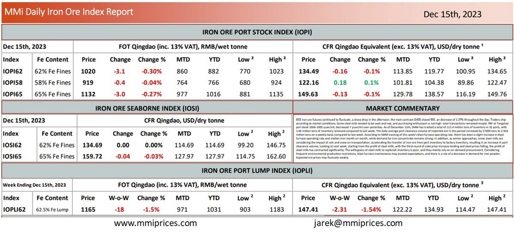

DCE iron ore futures continued to fluctuate ,a sharp drop in the afternoon. the main contract I2405closed 935. an decrease of 1.37% throughout the day; Traders ship according to market conditions; Some steel mills tended to be wait-and-see, and purchasing enthusiasm is not high. total transactions remained insipid. PBF at Tangshan port dealt 1004-1005 yuan/mt; decreased 7 yuan/mt over yesterday. As of December 15th, SMM has tracked a total of 112.4 million tons of inventory in 35 ports, with 2.69 million tons of inventory removed compared to last week; The daily average port clearance volume of imported ore in this period increased by 57000 tons to 2.926 million tons on a weekly basis compared to last week. According to SMM tracking of this week’s blast furnace operating rate, there has been a slight increase in blast furnace operating rate and molten iron month on month, while demand for iron concentrate remains strong; In addition, as winter approaches, some steel mills are considering the impact of rain and snow on transportation, accelerating the transfer of iron ore from port inventory to factory inventory, resulting in an increase in port clearance volume; Looking at next week, starting from the profit of steel mills, with the third round of coke price increase landing and steel prices falling, the profit of steel mills has contracted significantly. The willingness of steel mills to replenish inventory is poor, and they mainly rely on on-demand procurement; Considering frequent environmental production restrictions, blast furnace maintenance may exceed expectations, and there is a risk of a decrease in demand for iron powder; Expected ore prices may fluctuate weakly.

Download PDFSource: Metals Market Index (MMi)